886 jobs, documented and dated.
316 of them have photos. Scroll in, find the ones near you, then read one job from first call to final walkthrough.
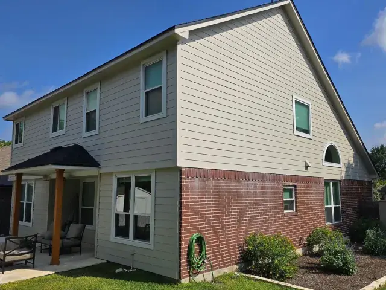
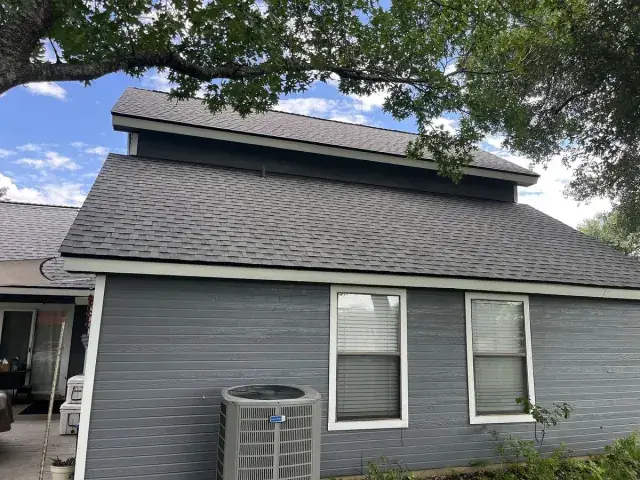
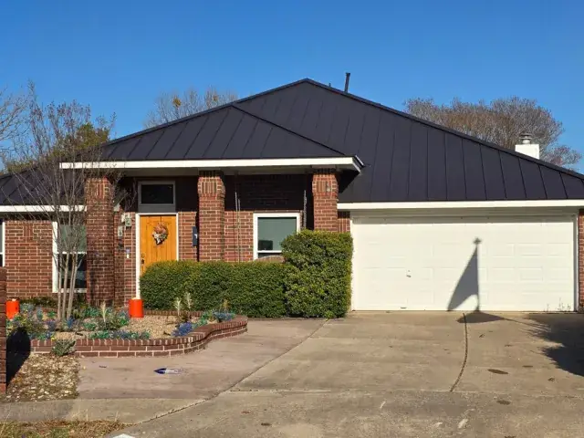
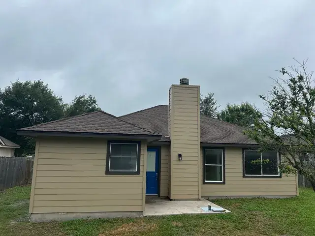
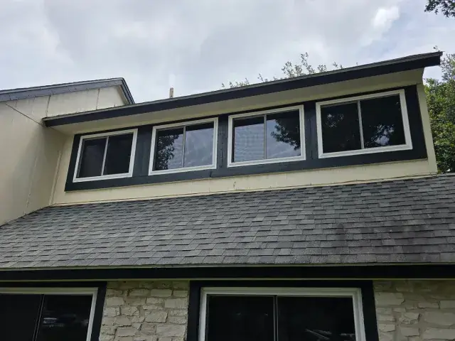
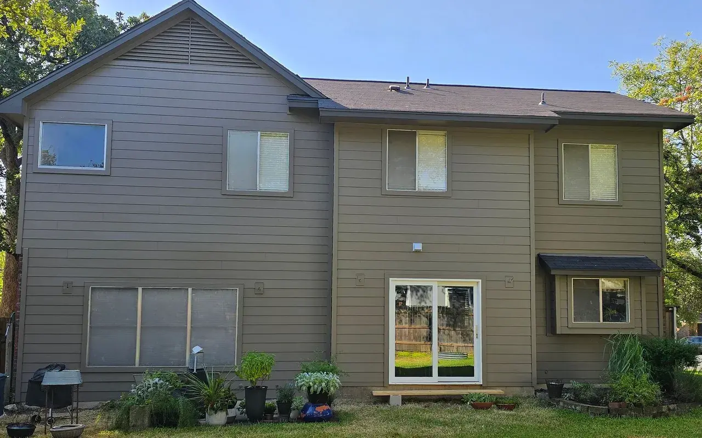
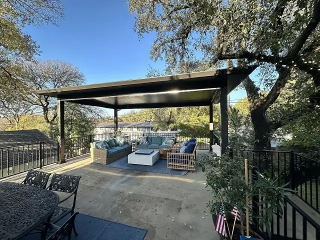
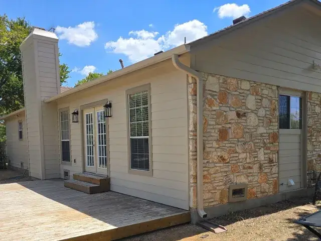
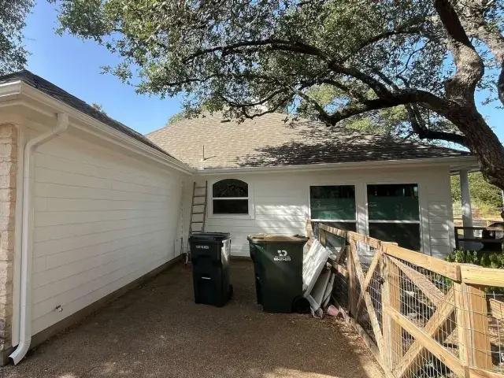
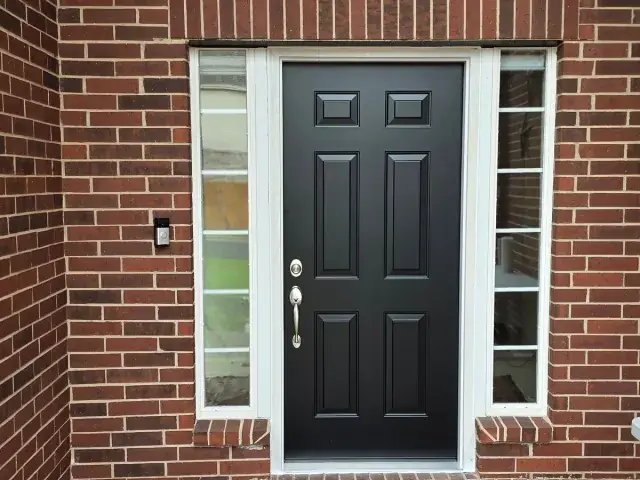
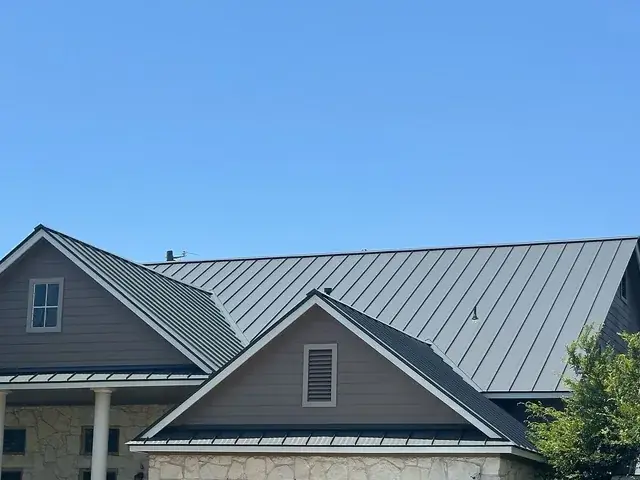
Find the jobs near you.
Placed near each home, never on it, exactly as the firm publishes them. Scrub the dates to watch the file fill up.
312 photographed projects are drawn here. 574 more documented projects are counted but sit outside this frame, have no recorded location or have no photos published yet. 312 + 574 = 886. Data: the project finder file published on austinprosiding.com.
Every photo is a finished job.
43 photos from the firm's captioned project file, each with its neighbourhood, month and trades. Tap one to see it large.
-
Maple Run, AustinSiding & Exterior Painting, Feb 2026
-
AustinSiding, Gutters & Exterior Painting, Sep 2026
-
Anderson Mill West, Cedar ParkSiding & Exterior Painting, Aug 2026
-
Maple Run, AustinSiding, Exterior Painting & Gutters, Jul 2026
-
AustinWindows, Sep 2026
-
Anderson Mill West, Cedar ParkWindows, Exterior Painting & Siding, Aug 2026
-
Barrington Oaks, AustinWindows, Jul 2026
-
Windermere, PflugervilleWindows, Jul 2026
-
Lavaca Loop, ElginShingle Roofing, Apr 2026
-
PflugervilleShingle Roofing, Oct 2025
-
Fairview, Round RockShingle Roofing, Jun 2025
-
Creekview, Round RockShingle Roofing, Gutters, Exterior Painting & Windows, Nov 2024
-
North Austin, AustinMetal Roofing, Jun 2026
-
Hillside Vista, AustinMetal Roofing & Siding, Aug 2026
-
Lakevista, BurnetMetal Roofing, Sep 2025
-
Buttercup Creek, Cedar ParkMetal Roofing, Mar 2025
-
Round RockPatio Covers, Sep 2025
-
Shady Hollow, AustinWindows, Patio Covers & Siding, Jan 2025
-
Tarrytown, AustinPatio Covers, Dec 2024
-
Legend Oaks, AustinPatio Covers, Nov 2024
-
Rivers Edge, GeorgetownDoors, Apr 2026
-
Heritage Hills, AustinDoors & Windows, Nov 2025
-
Milwood, AustinDoors, May 2025
-
Steeds Crossing, PflugervilleSiding & Doors, Jun 2026
-
Anderson Mill West, Cedar ParkSiding, Exterior Painting & Garage Doors, Dec 2025
-
Legend Oaks, AustinSiding, Shingle Roofing, Windows, Doors, Exterior Painting, Garage Doors & Gutters, Nov 2025
-
East Austin, AustinGarage Doors, Feb 2026
-
Jester Estates, AustinSiding, Exterior Painting & Garage Doors, Mar 2026
-
Block House Creek, LeanderSiding & Exterior Painting, Sep 2026
-
AustinShingle Roofing, Windows & Siding, May 2026
-
AustinSiding, Gutters & Exterior Painting, Sep 2026
-
Legend Oaks, AustinShingle Roofing, Apr 2026
-
Lakevista, BurnetMetal Roofing, Sep 2025
-
GeorgetownSiding & Exterior Painting, Sep 2026
-
PflugervilleShingle Roofing, Gutters & Exterior Painting, Dec 2025
-
Canyon Ridge, AustinSiding & Exterior Painting, Aug 2026
-
Ashford Park, BudaSiding, Shingle Roofing & Exterior Painting, Jul 2026
-
East Oak Hill, AustinWindows, Siding, Gutters & Exterior Painting, Sep 2026
-
Anderson Mill West, Cedar ParkWindows, Exterior Painting & Siding, Aug 2026
-
Heritage Hills, AustinDoors & Windows, Nov 2025
-
Bull Creek, AustinWindows & Doors, Jun 2026
-
Maple Run, AustinShingle Roofing, Siding, Patio Covers, Windows & Exterior Painting, Nov 2024
-
River Place, AustinWindows, May 2026
Fourteen pairs, price on each.
Every before-and-after pair on the homepage, the siding page and the windows page, filterable by trade. 177 pairs are published in all.
- Where
- Village at Western Oaks, Austin
- Finished
- Aug 2026
- Installed
- James Hardie 8.25" Smooth Siding
- Siding portion
- $25k-$30k
Bands are the job's own worksheet amount for that trade, before discounts. Photos come from the job file, cropped to the same frame.
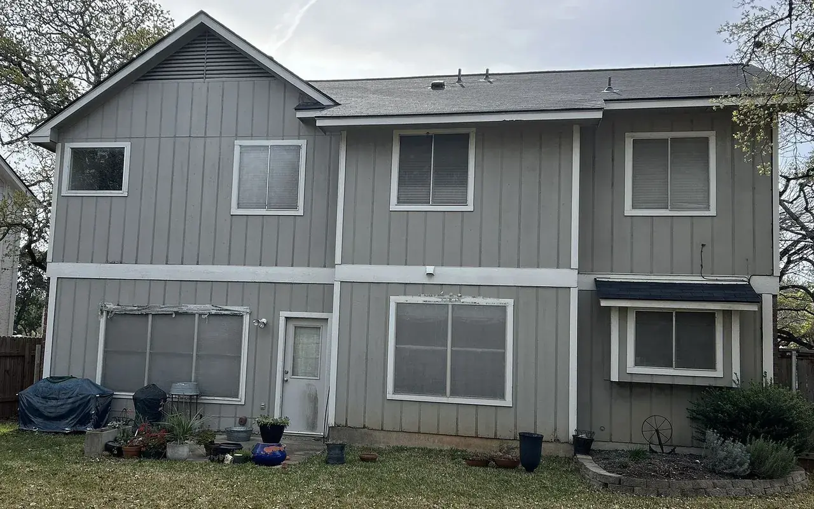
BeforeAfter Siding portion$25k-$30kDrag the handle or tap the photo to compare.Drag the handle to compare, or rest the pointer on the photo: the square shows the other half of the job through it.
Job APS-4867, start to finish.
Village at Western Oaks, Austin, as the firm's own file records it. Every job runs the same four steps: free inspection, written proposal, install, final check.
Exterior painting on the same job: $5k-$10k. Open job file APS-4867 (opens austinprosiding.com in a new tab)
- Mar 9, 2026
A referral, and an inspection the same day
A past customer sent the homeowner. The inspection and estimate started that day and covered siding plus fascia, soffit, garage jambs and brick-pocket details.
- Jun 18, 2026101 days later
Approved
The plan: James Hardie 8.25-inch smooth fiber cement, finished in Sherwin-Williams SuperPaint.
- Aug 31, 202674 days later
Crew on site
Wall sections, fascia, soffit, brick pockets and garage jambs, then paint on the siding, fascia, soffit, garage doors and porch ceiling.
- Sep 3, 2026Day 4 on site
Done
Punch-out items and two yard clean-ups, then the final walkthrough.
Scope, as the job file lists it
- Siding$25k-$30k
James Hardie 8.25″ smooth fiber cement on the wall sections, extended to fascia, soffit, garage jambs and brick pockets. Metal drip edge replaced at two 2-by-2 locations.
- Exterior painting$5k-$10k
Sherwin-Williams SuperPaint on the siding, plus fascia, soffit, garage doors and the porch ceiling, inside the four-day window.
Bands are each trade's own amount before discounts.
Nine photos from the job
See your house in the file next
The office calls you back to pick a time. The inspection is free and takes 30 to 60 minutes; you get the scope, materials and price in writing.
Monday-Friday 8 AM-8 PM, Saturday 8 AM-6 PM, Sunday noon-5 PM. Office: 7801 N Lamar Blvd, Suite C70, Austin, TX 78752.